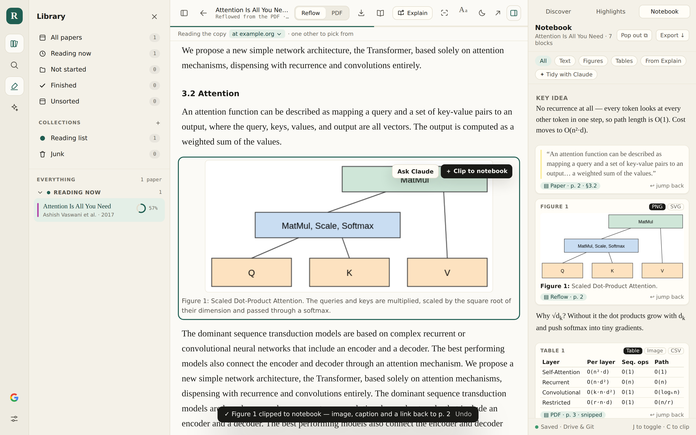
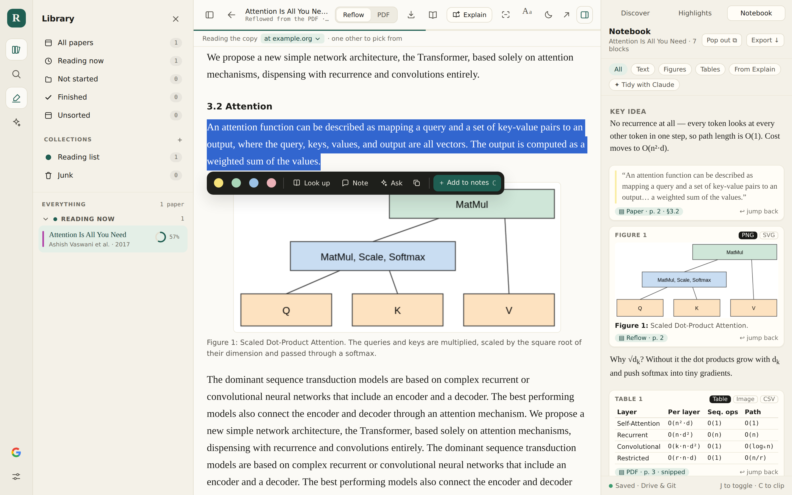
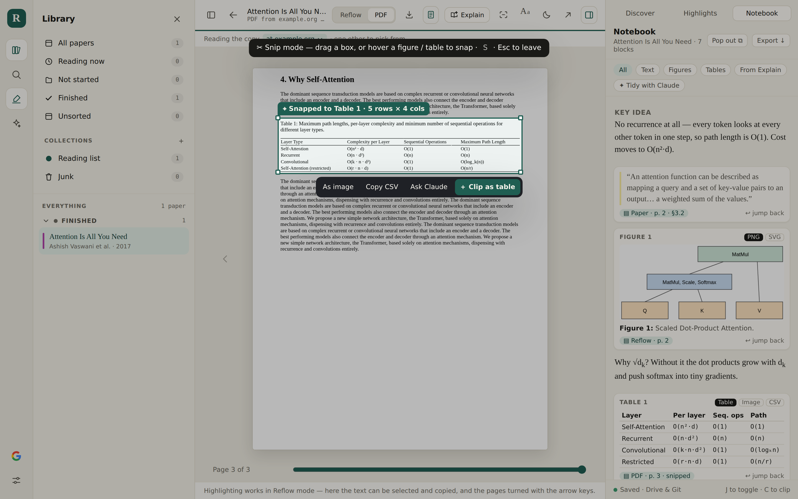
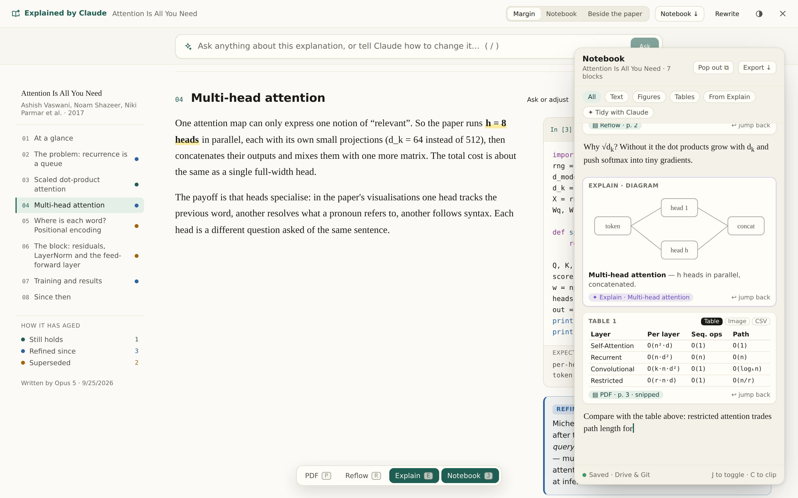
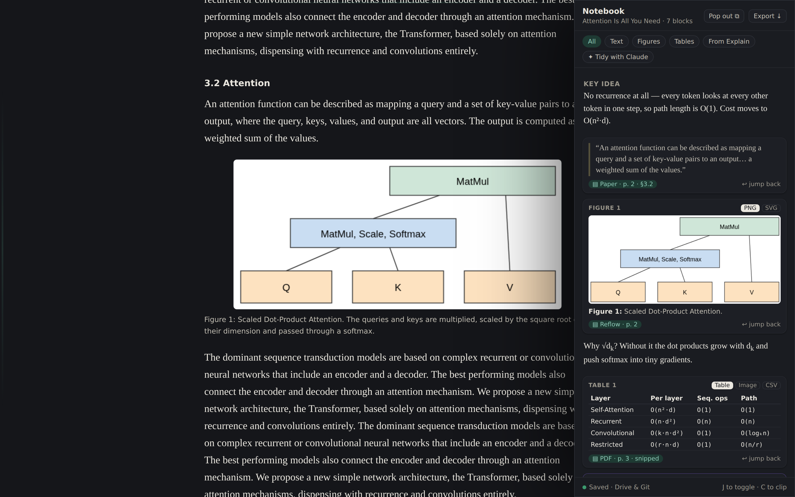

Reader · design mock-ups
Taking notes while you read
A notes panel that stays open while you move between the paper, its reflowed text and Claude's explanation. You can clip text, figures and tables into it, and every clip links back to where it came from.
These are screenshots of the real reader on a sample paper. The notes panel, clip buttons, snip box and view switcher are mocked into the page; the feature isn't built yet.

Clip a figure from Reflow
Hovering a figure offers Clip to notebook. The clipped image is the one the reader already cuts out of the PDF, with its caption. Each clip says where it came from, like “Reflow · p. 2”, and jump back returns you to it.

Add a selection
The toolbar that already appears over a selection gets one more button, Add to notes (key C). The quote keeps enough surrounding text to find its place again.

Snip a table from the PDF
In snip mode you drag a box, or hover and it snaps to the figure or table the reader has already found on the page. A table can be clipped as a real table with rows and columns, as an image, or copied as CSV.

Keep notes over Explain
Over Claude's explanation the notes float as a window. Diagrams, code cells and equations clip straight from the explanation. The switcher at the bottom shows the notes staying open as you move between PDF, Reflow and Explain.

Zen mode
With everything else hidden, the notes slide in from the right edge like the other panels, and away again when you go back to the page.
Still to decide
- One set of notes per paper, or per collection?
- Simple blocks (text between clip cards), or a rich editor?
- Should clipped images be saved to the Git mirror, or only to Drive?
- A name other than “Notebook”, which Explain already uses for one of its layouts.